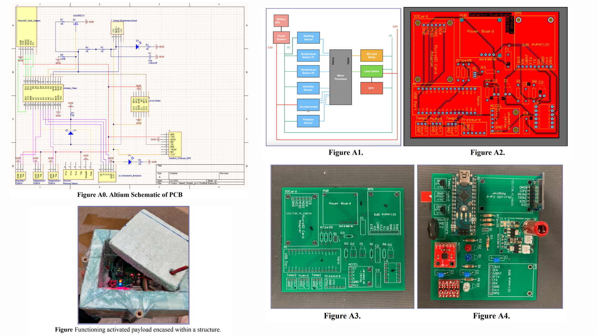
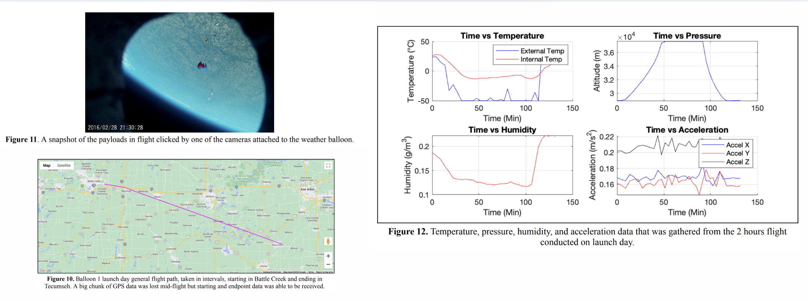

High-Altitude Atmospheric Analysis Electronics Payload
Under Prof. Aaron Ridley • Climate & Space Sciences & Engineering (CLaSP) • University of Michigan • Jan - April 2024
Overview: 1-lb weather-balloon payload with a custom PCB that logged temperature, pressure, humidity, acceleration, and GPS over a 2.2-hour flight. It passed a −40 °C cold-chamber test and multiple shock/drop trials, achieved reliable data capture over the course of its flight and was safely recovered as well!
Role: PCB & Firmware, Structure & Testing
Tools: Altium Designer, Arduino IDE, SolidWorks

Design & bench testing: schematic, PCB, fabricated boards, and assembled payload.

Flight results: stratosphere snapshot, flight path, and environmental/acceleration plots.
Results (Highlights):
133 min flight duration
−40 °C cold-chamber (≥ 2 h)
0.998 lb total mass
4.56 W avg. power (43% capacity margin)
1.3 GB / 8 GB storage used
~38 km peak altitude (≈ 50 min)
Reliable sensor logging end-to-end; GPS fixed after initial placement issue; route reconstructed post-recovery.
Survived drop, shock, and elevator tests; structure and insulation maintained integrity.
Design and Building:
Custom PCB (Altium) with temp, pressure, humidity, accelerometer, GPS, and microSD logging.
Lightweight structure: styrofoam shell, internal wood frame & battery bay, cotton insulation, plastic wrap.
Integrated heating pad (5 V, ~1 A max) to maintain internal temps at altitude.
More details (budgets, data, methods) :
Budgets
Power: 4.56 W draw; 11.41 Wh used vs. 16.28 Wh capacity (≈43% margin).Mass: Electronics 0.329 lb; full payload 0.998 lb (≤ 1 lb requirement).Data: 1.3 GB used of 8 GB available; large headroom for longer flights.
Test Campaign
Cold chamber: −40 °C for ≥ 2 hours; continuous logging.Elevator: 10 floors; pressure→altitude profile validated.Drop & shock: 4-story drop and shock impacts; accelerometer spiking as expected; system remained operational.GPS: Initial failure due to placement; fixed and re-verified.
Flight Data (Overview)
External temperature dropped to roughly −50 °C at altitude; internal maintained around −10 to −20 °C.
Humidity spike near ~100 min consistent with cloud-layer transit; pressure profile tracked climb then descent.
Accelerometer showed intermittent spikes from buffeting, twist, and rotation under wind.
My Contributions
PCB design & bring-up; sensor integration; microSD logging; GPS debugging and placement fix.
Structure co-design and insulation choice, test planning & execution (cold chamber, elevator, drop/shock).
Budgets & documentation as well as post-flight data review and interpretation.